iTest User's Guide
In iTest, schedules are a method of describing a test sequence as a series of steps. They provide a convenient and efficient way of describing complex test sequences. In addition, schedules may contain loops, nested loops, conditional actions, step tasks, and other special behavior. The schedules are executed by internal iTest code called Schedule Runner. For more information about Schedule Runner, refer to the ScheduleRunner documentation.
In standard iTest (non-BTS), Schedule Runner recognizes two types of schedules: Steady-State and Transient. These two schedules use pre-configured templates that are typically included with iTest solutions. In addition, iTest solutions will typically provide at least one pre-configured schedule. Schedule templates are defined in $SUPPORTDIR\Tables.def and are relevant to the solution. The schedule templates are available when adding a new schedule; refer to the Adding a New Schedule section below for more information. If a test sequence requires a combination of schedule types (e.g., Steady State and Transient), then a master schedule can be used to run this test sequence. For more information, refer to the Managing Master Schedules documentation.
Typically, schedules have three pages (i.e., Data page, Header page, and Notes page). These pages are used to configure the schedule, as needed. The type of test is defined on the Header page (e.g., Test Type = SteadyState). For more information, refer to the Editing Schedules section below. For more information relating to the format of schedule files (including Tables.def), refer to the Schedule File Format section.
To access this editor, select Tests > Schedules from the main menu or select the Schedules shortcut on the main page.
Schedules Menu Option
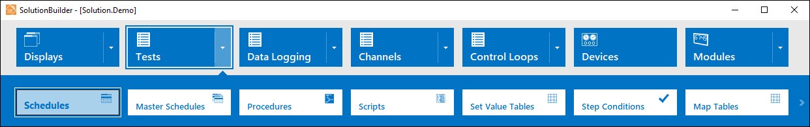
Schedules Shortcut
The Schedules editor is divided into two parts: the left pane and the editing area.
Schedules Editor Interface
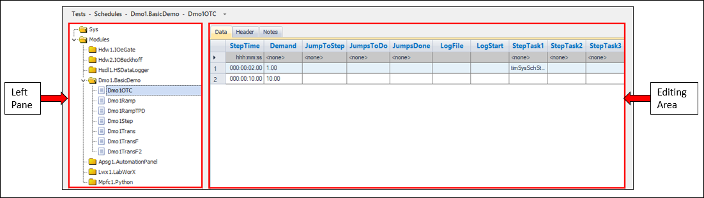
The left pane consists of all available schedules in the system and module folders. The following right-click options are available:
Right-Click Options
| Option | Description |
| Add | Adds a new schedule. For more information, refer to the Adding a New Schedule section. |
| Remove | Removes the selected schedule. |
| Rename… | Launches the Rename dialog, which is used to rename the schedule. |
| Duplicate | Duplicates the selected schedule. A unique index value is added to the end of the duplicated schedule. |
| Export to LabCentral... | Exports the selected schedule to LabCentral's Manage Lab Files page. Note: Your system must be connected to LabCentral for this option to be available. |
| Add Group… | Adds a new schedule group. For more information, refer to the Creating New Schedule Groups section. |
| Cut | Deletes a selected schedule and copies it to the clipboard. |
| Copy | Copies a selected schedule to the clipboard. |
| Pastes | Pastes the selected schedule. |
| Undo | Undoes the last action. |
| Redo | Redoes the last undone action. |
The editing area is composed of three pages: Data, Header, and Notes. Each page is used to customize your schedule. You can modify test steps, header data, and schedule notes by double-clicking in these pages.
Editor Pages
| Page | Description |
| Data | The Data page is used to write your tests. Each row in the schedule is a step in the test. Schedules can contain loops, nested loops, conditional actions, step tasks, and other special behavior. For more information, refer to the Data Page section. |
| Header | The Header page of the schedule is a set of keyword/value pairs that can be modified prior to running a test. For more information, refer to the Header Page section. |
| Notes | The Notes page can be used to provide additional information about the schedule. This is a free-form text editor, and it can be used to easily add, delete, and modify schedule details, as necessary. For more information, refer to the Notes Page section. |
To create a new schedule, do the following:
TestType=SteadyState). This test type is used to evaluate the performance of a system or component under a series of constant, or steady-state, conditions (steps). For more information, refer to the Steady State Schedules section.TestType=Transient). This test type is typically a test that runs at a relatively high frequency (e.g., 10 Hz). For more information, refer to the Transient Schedules section.A steady state test sequence is used to evaluate the performance of a system or component under a series of constant, or steady-state, conditions (steps). The characteristics for each schedule step is defined on the Data page by a series of column settings in each of the step rows. The schedule columns define a wide range of settings including step time, setpoint values, mode settings, looping details, conditional actions, ramp value, and more. Schedule columns can be added or removed depending on the required nature of the test sequence. The Header page settings are related to the whole sequence (e.g., Logging, Limits, etc.).
A transient test sequence is typically a test that runs at a relatively high frequency (e.g., 10 Hz). It usually contains a small number of variables while other system variables are held constant. The characteristics of each transient test are mainly described on the Header page (e.g., Logging, Limits, Step Time, etc.). The Data page contains columns of setpoints that are issued on each step. Columns can be added or removed as required.
The following limitations are applicable to Steady State and/or Transient schedules:
Schedule Limitations
| Limitation | Value/Description |
| Steady State minimum step duration | 0.1 seconds |
| Transient minimum step duration | 0.01 seconds |
| Columns in a schedule | 200 |
| Rows in a schedule | 100,000 |
Schedule groups provide a way to organize and categorize your schedules. After you add a new group, you can add new schedules to it. To create a group, right-click in the left pane and select the Add Group… option. After you enter a name for the group, the new schedule group will display in the left pane as a folder.
 |
NOTE: | Empty groups are not retained in-between saves. |
New Schedule Group
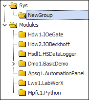
Schedules are composed of three pages: Data, Header, and Notes. The editors in these pages are used to customize your schedule. You can modify test steps, header data, and schedule notes by double-clicking in the editor pages.
The Data page is used to write your tests. Each row in the schedule is a step in the test. Schedules can contain loops, nested loops, conditional actions, step tasks, and other special behavior.
Data Page
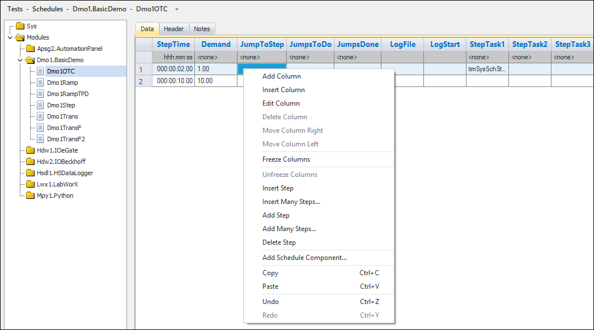
The following column types are available for each type of schedule template in Solution.Demo:
|
NOTE: | For a full list of available columns, refer to the Column Types documentation. |
Schedule Column Descriptions
| Column | Field Type | Description |
| Steady State Schedules | ||
|---|---|---|
| StepTime | HH:MM:SS | The duration of the test step. 0 indicates that the step will not end until a step task condition returns true. |
| Demand | Channel | The channel used for demand. |
| RampMode | Picklist | Determines the ramp type. Options include Rate and Time. |
| RampValue | Picklist/Numeric Value | The virtual output channel or numeric value used for ramping. |
| JumpToStep* | Dialog | Launches the Jump Setup dialog. This column determines the step number to jump to. This entry is verified to ensure that the destination step exists in the schedule. The jump is performed at the end of a step. Note: This number is adjusted automatically if rows above the destination step are inserted or deleted. Example: - Jump to Step is set to 2, and Step 1 is deleted. - Step 2 is now Step 1, so Jump to Step is changed to 1. Likewise, if a step is inserted above Step 2, then Step 2 becomes Step 3. This time, the Jump to Step value is adjusted to 3. |
| JumpsToDo* | Dialog | Launches the Jump Setup dialog. This column determines the number of times the jump is performed. |
| JumpsDone* | Dialog | Launches the Jump Setup dialog. This column displays the number of jumps done. Note that when viewing the Schedule during runtime, this field does not display an updating value unless viewing in the AutomationPanel GUI environment. |
| LimitsGroup | Picklist | The limit group applied to the schedule. Limit groups are configured using SolutionBuilder's Limit Groups editor. For more information, refer to the Limit Groups documentation. |
| LogFile | Picklist | The type of log file used for this step of the schedule. |
| LogStart | Numeric | The time logging will be started. |
| StepTask (1, 2, 3) | Dialog | Launches the Step Task Check Setup dialog. This is an action that is performed when a condition evaluates to true. For more information, refer to the Step Tasks documentation. |
| Transient Schedules | ||
| Temp | Channel | The channel used to determine temperature. |
Data Page Right-Click Options
| Option | Description | Keyboard Shortcut |
| Add Column* | Opens the Add Column dialog. Under the General tab, configure the column's channel, title, units, and default (initial) value. Select the checkbox next to Reset each row to to reset the row to a specified value. Select the checkbox next to Read-only in runtime editor to prevent the column values from being modified during runtime from AutomationPanel. Under the Layout tab, select the column type. Depending on the column type, additional information may be necessary. Additional information can be entered in the field under the Type drop-down list. Select the checkbox next to Mark as required to make the column required in the schedule. Select the checkbox next to Show at runtime to show the column at runtime. The new column is added to the end of the column list. |
- |
| Insert Column* | Opens the Insert Column dialog. Under the General tab, configure the column's channel, title, units, and default (initial) value. Select the checkbox next to Reset each row to to reset the row to a specified value. Select the checkbox next to Read-only in runtime editor to prevent the column values from being modified during runtime from AutomationPanel. Under the Layout tab, select the column type. Depending on the column type, additional information may be necessary. Additional information can be entered in the field under the Type drop-down list. Select the checkbox next to Mark as required to make the column required in the schedule. Select the checkbox next to Show at runtime to show the column at runtime. The new column is added to the left of the selected column. If a column is not selected, the new column will be added to the beginning of the schedule. |
- |
| Edit Column* | Opens the Edit Column dialog for the selected column. Under the General tab, configure the column's channel, title, units, and default value. Select the checkbox next to Reset each row to to reset the row to a specified value. Select the checkbox next to Read-only in runtime editor to prevent the column values from being modified during runtime from AutomationPanel. Under the Layout tab, select the checkbox next to Mark as required to make the column required in the schedule. Select the checkbox next to Show at runtime to show the column at runtime. Note that you cannot change the column type. |
- |
| Delete Column* | Deletes the column. | - |
| Move Column Right* | Moves the column to the right. This option is disabled when right-clicking the last column in the spreadsheet. | - |
| Move Column Left* | Moves the column to the left. This option is disabled when right-clicking the first column in the spreadsheet. | - |
| Freeze Columns | Locks the column in place so that only the columns to the right of the frozen column in the spreadsheet are scrollable. | - |
| Unfreeze Columns | Unlocks the column so that all columns can be scrolled. | - |
| Insert Step | Inserts a step in the schedule. The new step is inserted before the highlighted row. | - |
| Insert Many Steps | Inserts many steps in the schedule at once. You will be prompted to enter the number of rows to add to the schedule. The new steps are inserted before the highlighted row. | - |
| Add Step | Inserts a new step at the end of the schedule. | - |
| Add Many Steps | Adds many new steps to the end of the schedule at once. You will be prompted to enter the number of rows to add to the schedule. The new steps are inserted before the highlighted row. | - |
| Delete Step | Deletes the highlighted step or steps. Jump To steps and Step Task Go to Steps are automatically adjusted when steps are deleted. | - |
| Add Schedule Component...* | Launches the Add Schedule Component dialog. This dialog allows you to add components from modules that have been imported into your solution. After selecting the component and clicking OK, the component's columns will be added to the end of your current schedule. Note: This option is only available for modular solutions. |
- |
| Copy | Copies the content of the highlighted cells. | CTRL + C |
| Paste | Pastes the copied values. See the Pasting Content into Schedules section below for pasting rules. | CTRL + P |
| Undo | Reverts the last change made to the schedule. | CTRL + Z |
| Redo | Reapplies the undone change made to the schedule. | CTRL + Y |
| View Profile | Launches the Schedule Profile Review dialog. This option is only available if the Data Page contains Mode and Step Time columns. See the View Profile section below for more information on this dialog. | - |
There are certain rules that apply when pasting content into schedules.
Pasting From Excel
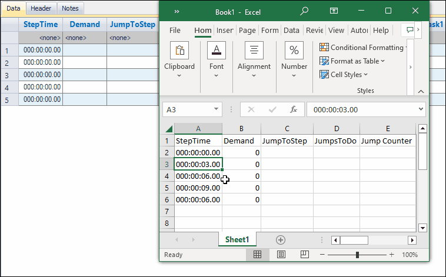
The View Profile option provides a chart view of the schedule currently being edited. To launch the Schedule Profile Review Dialog, right-click a column on the Data page and click View Profile.
Schedule Profile Review Dialog
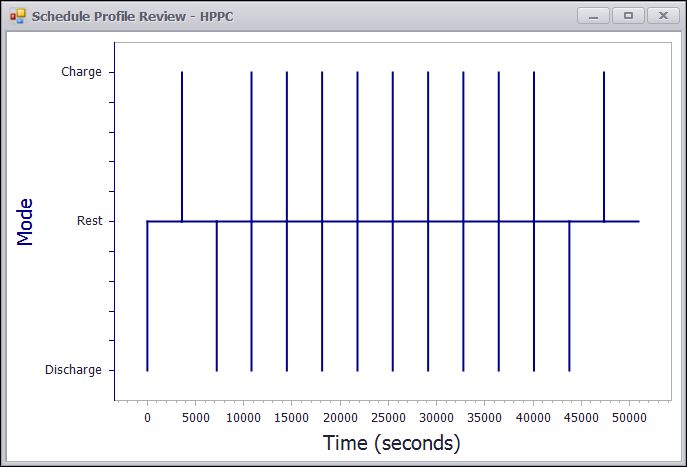
|
NOTE: | The View Profile option is only available for schedules with Mode and Step Time columns. |
In addition to the Move Column Left and Move Column Right right-click options, you can drag and drop columns to specified locations in the Data page.
Dragging and Dropping Columns
The Header page of the schedule is a set of keyword/value pairs that can be modified prior to running a test. The image below shows the possible right-click options available in this page.
Header Page
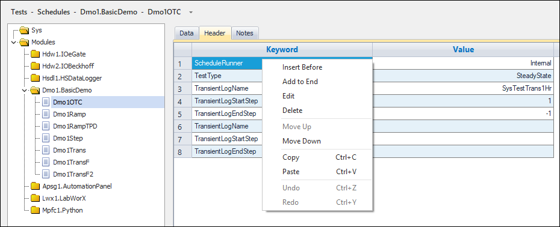
Header Page Right-Click Options
| Option | Description | Keyboard Shortcut |
| Insert Before | Launches the Insert List Keyword dialog, which you can use to specify a new Keyword/Value pair. When you click OK, the new Keyword/Value pair is added before the highlighted pair. For more information, refer to the Adding a New Keyword and Value Pair section. | - |
| Add to End | Launches the Add List Keyword dialog, which you can use to specify a new Keyword/Value pair. When you click OK, the new Keyword/Value pair is added to the end of the editor. For more information, refer to the Adding a New Keyword and Value Pair section. | - |
| Edit | Launches the Edit List Keyword dialog, which you can use to modify the Keyword/Value pair. | - |
| Delete | Deletes the selected row. This option is only enabled for custom rows. | - |
| Move Up | Moves the selected row up one row in the editor. This option is only enabled for custom rows. | - |
| Move Down | Moves the selected row down one row in the editor. This option is only enabled for custom rows. | - |
| Copy | Copies the value of the selected cell. | CTRL + C |
| Paste | Pastes the copied value into the selected cell. Note: You cannot paste values into cells when the row type is different than the source row type. | CTRL + V |
| Undo | Undoes the last performed action. | CTRL + Z |
| Redo | Redoes the last undone action. | CTRL + Y |
To add a new Keyword/Value pair, do the following:
The Notes page can be used to provide additional information about the schedule. This is a free-form text editor, and it can be used to easily add, delete, and modify schedule details, as necessary.
Notes Page
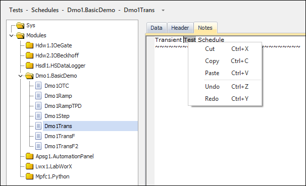
Notes Page Right-Click Options
| Option | Description | Keyboard Shortcut |
| Cut | Copies and remove the selected text. | CTRL + X |
| Copy | Copies the selected text. | CTRL + C |
| Paste | Pastes the copied text. | CTRL + P |
| Undo | Undoes the last change made. | CTRL + Z |
| Redo | Redoes the last undone change made. | CTRL + Y |
You can add, rename, or delete List and Matrix pages using their respective right-click options (as described in the table below). When adding a new list or matrix page, you can select an existing list/matrix page to use as a template. Click OK to add the new page to the schedule.
Right-Click Options
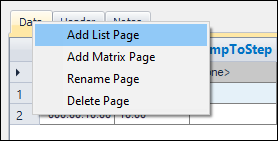
New List Page Dialog
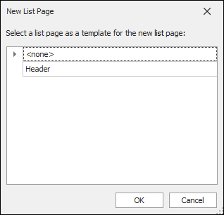
New Schedule Page
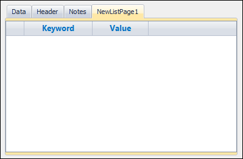
Right-Click Option Descriptions
| Option | Description |
| Add List Page | Launches the Add List Page dialog, which allows you to add a new list page. |
| Add Matrix Page | Launches the Add Matrix Page dialog, which allows you to add a new matrix page. |
| Rename Page | Allows you to rename the name of the page. The name must be unique. |
| Delete Page | Deletes the selected page. |
Schedules can be exported to LabCentral's Manage Lab Files page using the following steps:
|
NOTE: | Schedules can only be exported if iTest is connected to LabCentral. |
Solution.Demo is a basic solution used to demonstrate iTest fundamentals. It includes two schedule templates (i.e., Steady_State_Template_1 and Transient_Template_1). Your solution will include schedules and templates that are relevant to your application. The following sections are examples of each schedule type.
The Steady State example below is an eight-step test sequence that sets a series of values for the Demand channel. In this schedule, step 4 will loop back to step 1 twice, as defined in the JumpToStep and JumpsToDo columns on the Data page. This means that steps 1 - 4 will be repeated a total of three times. Step 5 has a step task, which will stop the test when voDmo1Feedback > voDmo1Demand * 1.1.
Steady State Schedule Example
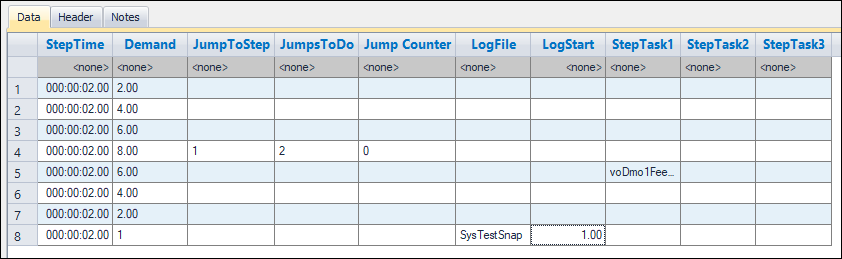
Step Task from Step 5
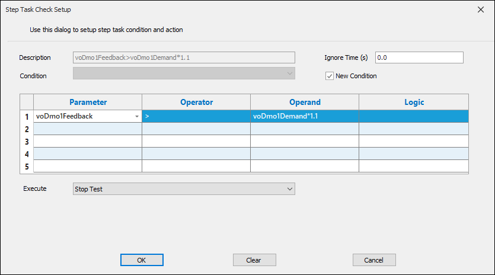
A transient type data log will start on step 1 and end on step 7, as defined by the TransientLogStartStep and TransientLogEndStep entries on the Header page. On step 8, a snap type data log will take place 1 second after the start of the step.
Header Page
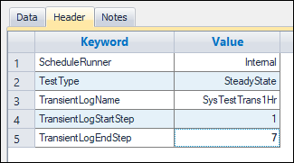
The image below displays the transient data collected for the voDmo1Demand channel:
Transient Data Log
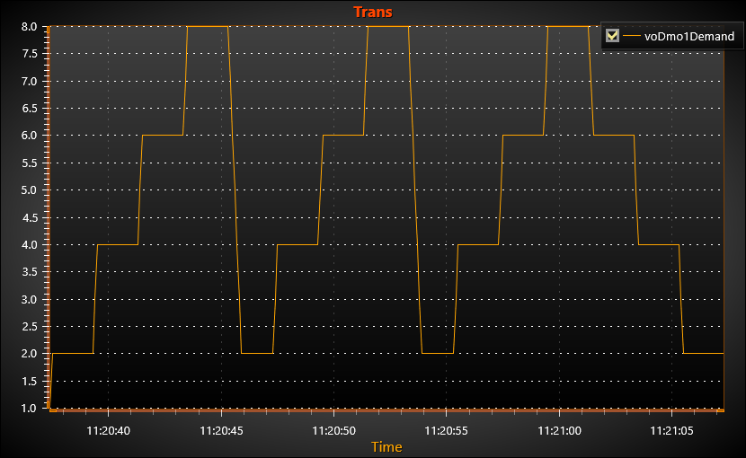
The Transient schedule example is a 200-step test that sets sequence values for the voDmo1Demand channel. A transient type data log will start on step 1 and end on the last schedule step. Note that when TransientLogEndStep=-1, the transient type data log will end on the last schedule step. The Default limit group will be applied for the duration of the schedule. The step time is 0.1 seconds (10 Hz).
Transient Schedule Example - Data Page
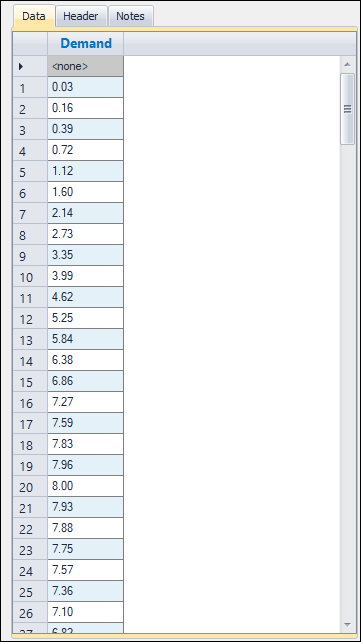
Transient Schedule Example - Header Page
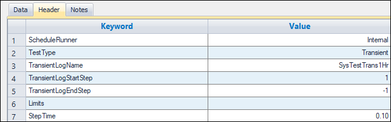
The image below displays the transient data collected for the voDmo1Demand channel:
Transient Data Log
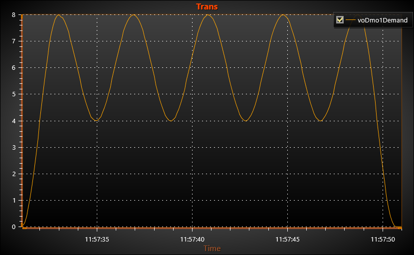